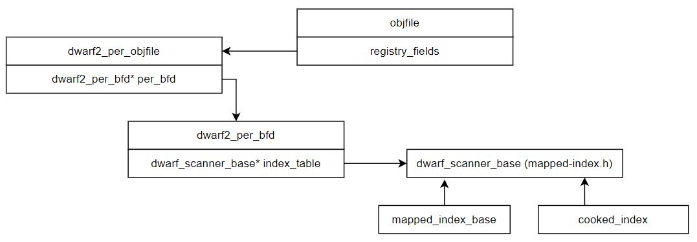

1. Overview

- May 11th, 2019: GDB 8.3 Released!
- DWARF index cache: GDB can now automatically save indices of DWARF symbols on disk to speed up further loading of the same binaries.
2. What changed
2.1. New structure
gdb 8.2 (gdb/dwarf2read.h):
struct dwarf2_per_objfile : public allocate_on_obstack
{
gdb 13.2 (gdb/dwarf2/read.h):
struct dwarf2_per_bfd
{
...
/* The mapped index, or NULL in the readnow case. */
std::unique_ptr<dwarf_scanner_base> index_table; <======== new2.2. build index_table in dwarf2_per_bfd
per_bfd->index_table = std::move (map); 2.3. Changed in save gdb–index command
- save_gdb_index_command – index–write.c link
- from write_psymtabs_to_index to write_dwarf_index
gdb 8.2 (gdb/dwarf-index-write.c):
static void
save_gdb_index_command (const char *arg, int from_tty)
{
...
write_psymtabs_to_index (dwarf2_per_objfile, arg, index_kind);
gdb 13.2 (gdb/dwarf2/index-write.c):
static void
save_gdb_index_command (const char *arg, int from_tty)
{
...
write_dwarf_index (per_objfile->per_bfd, arg, basename,
dwz_basename, index_kind);